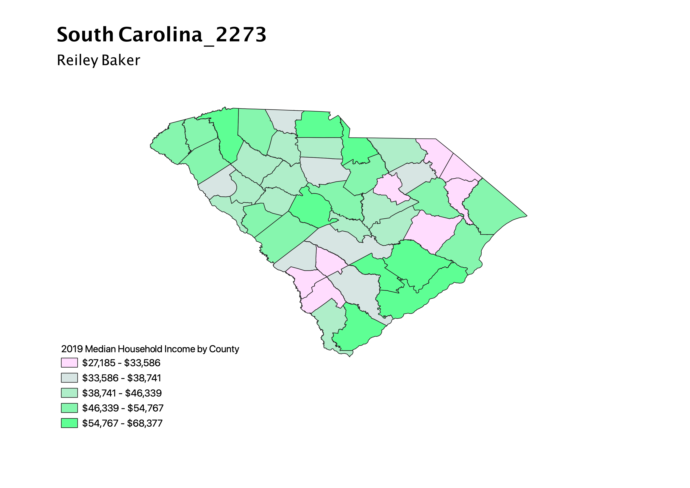

Homework 7: Census Data Choropleth
Reiley Baker
This map displays the median household income by counties in South Carolina. In 2019, the United States median household income was $68,703, but all 46 counties in South Carolina in 2019 had a median household income lower than the nationalwide number. As median household income increases on the map, the gradient becomes more green; the counties with the highest median are the darkest green, while the poorest counties are light pink.

Data used for this project
CSV dataset
Link to shapefile